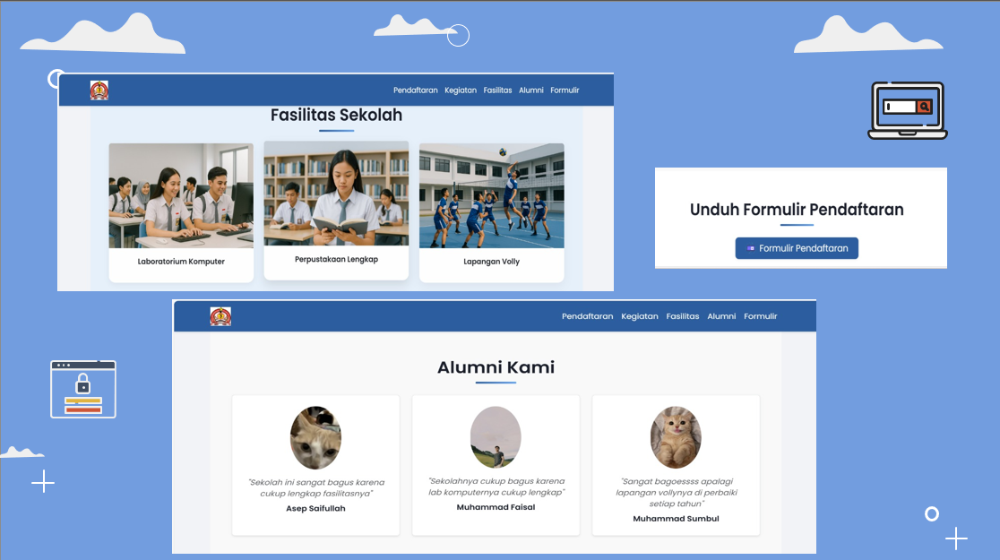
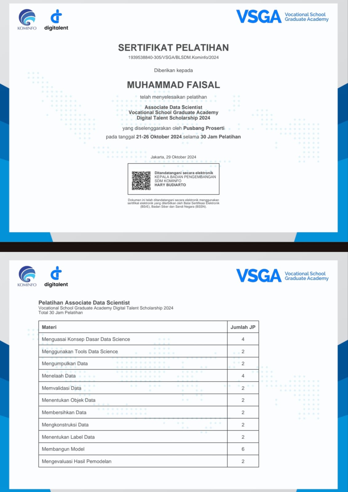
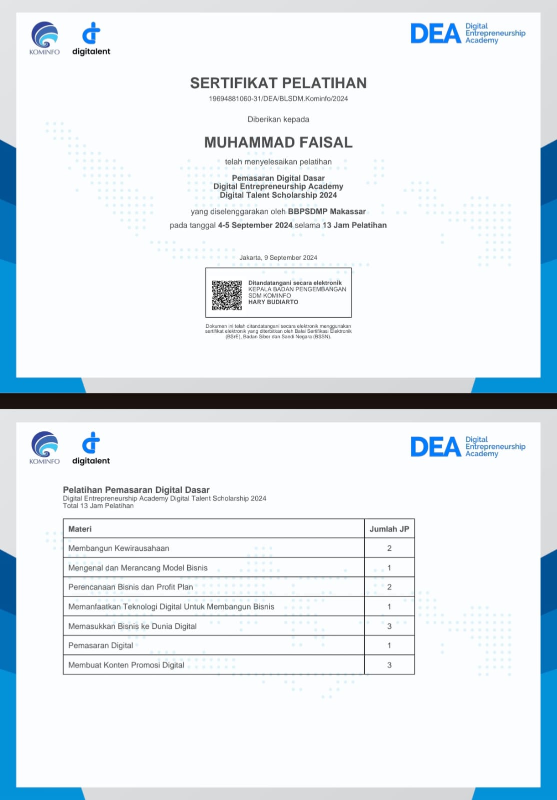
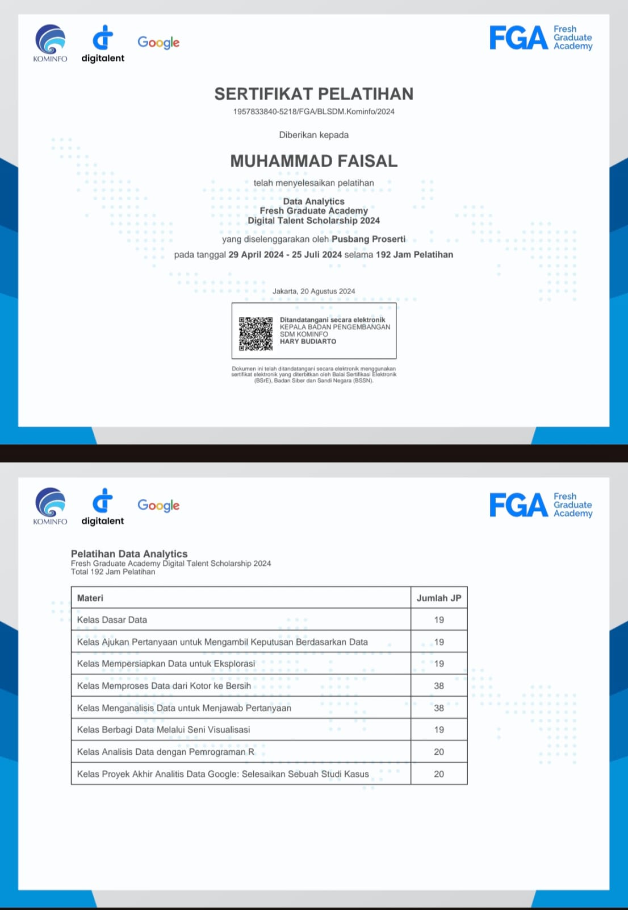
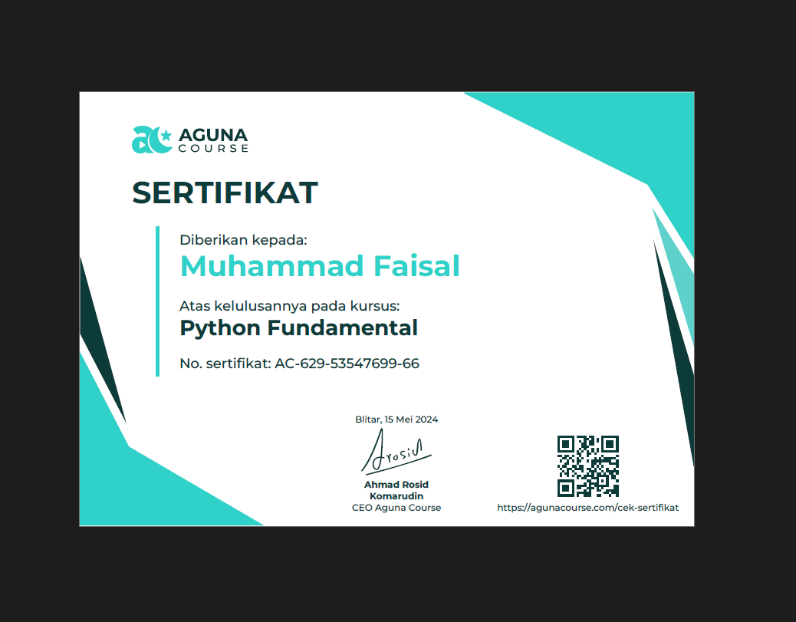
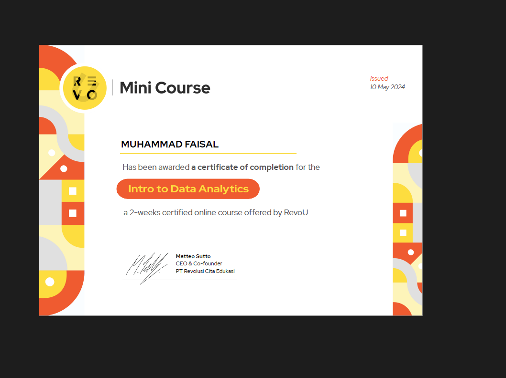

Web Programming Development
VSGA Digital Talent Scholarship 2025Pengembangan web modern full-stack dengan pendekatan UI, integrasi sistem, dan logika aplikasi yang lebih matang.
Saya merupakan lulusan Teknik Komputer dan Jaringan dari Politeknik Negeri Ujung Pandang yang memiliki minat pada pengembangan website, pengolahan data, dashboard, serta otomasi kerja berbasis web.
Saat ini saya juga menjalankan pekerjaan part-time sebagai freelancer IT Support dan freelancer pembuatan website UMKM, sehingga saya terbiasa menangani kebutuhan teknis, visualisasi data, dan pengembangan sistem yang lebih praktis untuk kebutuhan nyata.
Saya menyukai pekerjaan yang menggabungkan sisi teknis, visual, dan kemudahan penggunaan. Karena itu, saya terbiasa mengerjakan sistem yang tidak hanya berjalan, tetapi juga enak dipahami saat dipresentasikan.
Portofolio ini berisi kumpulan project website, dashboard, visualisasi data, otomasi laporan, serta sistem berbasis App Script dan Spreadsheet yang saya bangun untuk kebutuhan akademik, freelance, maupun kebutuhan kerja yang lebih praktis.
Menangani kebutuhan teknis ringan, konfigurasi, troubleshooting, serta pendampingan penggunaan sistem secara part-time.
Membantu pembuatan website sederhana hingga presentatif untuk UMKM agar tampilan usaha lebih profesional di ranah digital.
Web development, dashboard monitoring, pengolahan data, App Script, dan visualisasi informasi yang mudah dibaca pengguna.
Menyusun data agar cepat dibaca, mudah dipantau, dan mendukung pengambilan keputusan.
Mengutamakan tampilan bersih, responsif, dan cukup modern tanpa membuat pengguna bingung.
Mengurangi pekerjaan manual melalui alur input, pengolahan, dan output laporan yang lebih efisien.
Menampilkan hasil kerja dalam bentuk yang lebih menarik agar mudah dipahami saat dipaparkan.
Beberapa pelatihan dan sertifikasi yang turut membentuk fondasi saya dalam web development, data processing, dan visualisasi.

Pengembangan web modern full-stack dengan pendekatan UI, integrasi sistem, dan logika aplikasi yang lebih matang.

Machine Learning, preprocessing data, dan visualisasi sebagai dasar pengolahan data yang lebih terarah.

Pemahaman SEO, SEM, dan social media marketing untuk mendukung sisi promosi digital.

Analisis statistik dan pengolahan insight untuk membantu pengambilan keputusan berbasis data.

Penguasaan struktur data dan dasar pemrograman Python untuk otomasi dan analisis data.

Fundamental visualisasi data bisnis dan penyajian insight dengan pendekatan storytelling.
Saya susun ulang seluruh project dengan visual yang lebih besar, galeri yang lebih nyaman dilihat, filter kategori, pencarian judul, serta detail project yang dapat dibuka dan ditutup agar penjelasannya tetap rapi.
Sistem update firmware over-the-air (OTA) untuk perangkat IoT agar proses pembaruan lebih cepat, aman, dan efisien.
Dibangun dengan: Python, MQTT, ESP8266
Aplikasi Android untuk manajemen produk dan inventaris UMKM agar pencatatan stok dan data usaha menjadi lebih tertata.
Dibangun dengan: Java, XML, SQLite
Sistem Informasi Manajemen Program Studi full-stack untuk kebutuhan monitoring akademik dan pengelolaan data.
Dibangun dengan: React, Node.js, MySQL
Pengembangan dan integrasi API data kuliner khas dengan frontend interaktif untuk penyajian informasi yang lebih dinamis.
Dibangun dengan: React, Node.js, Express
Platform jual beli barang bekas layak guna dengan fitur CRUD lengkap untuk mendukung pengelolaan data produk.
Dibangun dengan: PHP, MySQL, Bootstrap
Website katalog dan penjualan perangkat jaringan komputer online dengan tampilan produk yang terstruktur.
Dibangun dengan: WordPress, WooCommerce
Eksplorasi desain portfolio modern dengan konsep Bento Grid untuk menghasilkan tampilan yang rapi, menarik, dan modular.
Dibangun dengan: HTML, CSS Grid, UI Design
Website profil bisnis untuk penawaran jasa kebersihan profesional dengan fokus pada tampilan informatif dan promosi layanan.
Dibangun dengan: WordPress, Elementor
Sistem informasi penyewaan motor dengan katalog unit yang menampilkan kendaraan secara lebih rapi dan mudah dipahami.
Dibangun dengan: WordPress
Website e-commerce untuk penjualan aneka kue tradisional dengan tampilan produk yang lebih menarik dan terstruktur.
Dibangun dengan: WordPress
Sistem informasi jasa penyewaan tenda untuk berbagai acara dengan tampilan layanan yang mudah dipahami calon pelanggan.
Dibangun dengan: WordPress
Dashboard interaktif monitoring data peserta DTS wilayah Indonesia Timur untuk membantu pembacaan data yang lebih cepat.
Dibangun dengan: Looker Studio, Google Sheets
Sistem manajemen data siswa, guru, dan jadwal sekolah berbasis web untuk mendukung administrasi pendidikan.
Dibangun dengan: PHP, JavaScript
Sistem Pendukung Keputusan penentuan rekomendasi vokasi disabilitas menggunakan metode AHP agar proses penilaian lebih terukur.
Dibangun dengan: Laravel, AHP Method, MySQL
Sistem visualisasi indikator kinerja setiap penyuluh BRPBAPPP agar capaian dapat dipantau lebih jelas dan terukur.
Dibangun dengan: Spreadsheet, App Script, JavaScript, HTML, Looker Studio
Sistem automasi untuk pengumpulan laporan mingguan, rekap progres per unit, unduhan laporan periodik, hingga notulensi rapat otomatis.
Dibangun dengan: Google Form, Spreadsheet, Autocrat, App Script, JavaScript
Dashboard visualisasi data pegawai yang dilengkapi fitur generate laporan bulanan otomatis untuk mempermudah pengelolaan data kepegawaian.
Dibangun dengan: Spreadsheet, App Script, JavaScript, HTML
Sistem visualisasi data penyuluh berbasis HTML untuk menampilkan basis data penyuluh secara lebih rapi, ringan, dan mudah dibaca.
Dibangun dengan: App Script, JavaScript, HTML
Visualisasi data penyuluh di suatu daerah untuk mendukung pembacaan kondisi wilayah dan monitoring lapangan secara lebih terstruktur.
Dibangun dengan: Spreadsheet, Looker Studio, App Script
Visualisasi data pegawai untuk memantau progress campaign yang telah dijalankan pada beberapa media sosial seperti Instagram dan X/Twitter.
Dibangun dengan: Spreadsheet, Looker Studio, App Script
Jika ingin berdiskusi tentang website, dashboard, pengolahan data, App Script, atau kebutuhan sistem sederhana untuk usaha dan pekerjaan, silakan hubungi saya.
Saya terbuka untuk diskusi, kolaborasi, dan pekerjaan freelance yang relevan dengan pengembangan website, dashboard, atau pengolahan data.
Gunakan form berikut jika ingin menyampaikan kebutuhan project, pertanyaan, atau tawaran kerja sama.